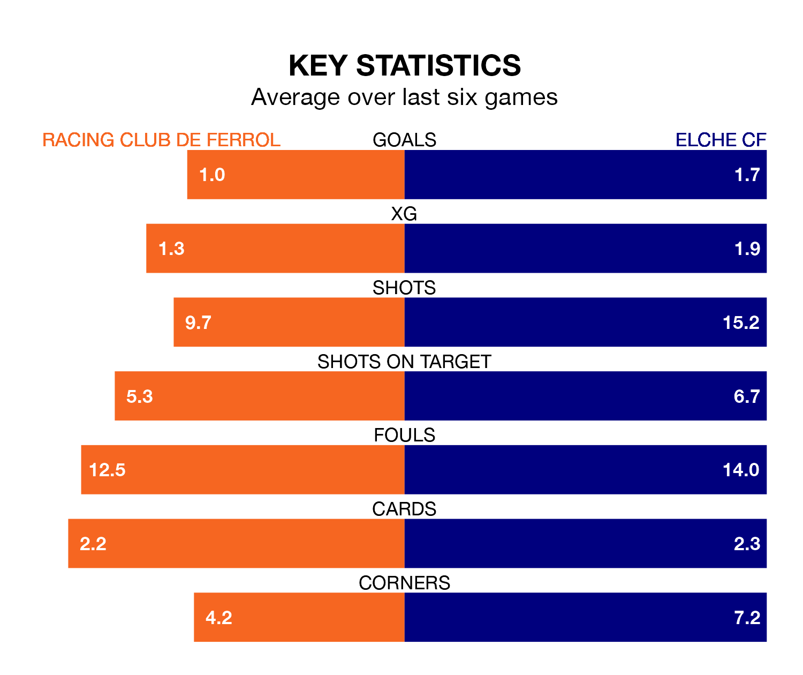

Elche CF travel for Sunday's match against Racing Club de Ferrol looking to bounce back from defeat last time out in the Segunda División.
Elche, who sit third in the league after 32 games, fell to a 3-2 away defeat to Levante UD on March 24.
They face a Racing side who secured a draw in their last match, a 1-1 tie with Albacete Balompié, and who sit 10th in the table.
With 39 goals in 32 games so far this season, Racing are scoring more than average in the league with 1.2 goals per game. But they are conceding more than average too, letting in 37 goals at a rate of 1.2 per game.
Elche, meanwhile, are average scorers, with 1.1 goals per game. They have conceded 0.9 goals per game.
Ferrol are in disappointing form in the Segunda División, with one win and three draws from their last six games.
With four wins and a draw over that period, the away side's form is much better – they have taken 13 points from 18, compared to the hosts' six.
Racing's Iker Losada Aragunde is among the league's most creative players, racking up seven assists in 32 appearances so far this season, and holding third spot in the Segunda División's assist charts.
For Elche, Arnau Puigmal has set up the most goals, having laid on three assists in four games.
Updated: 12:39 (UTC), 26/03/24